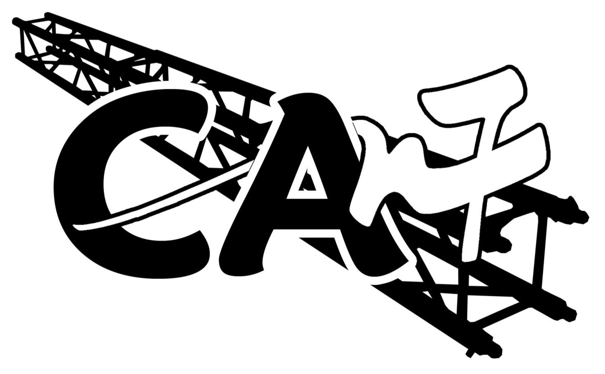
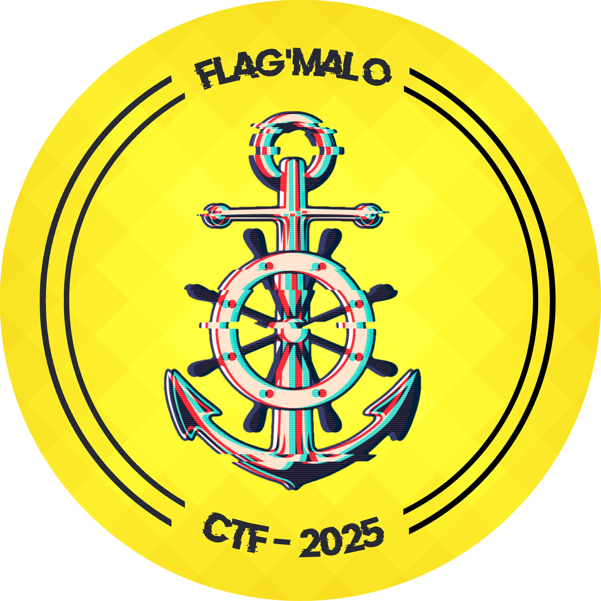
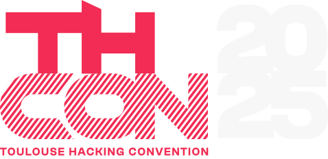
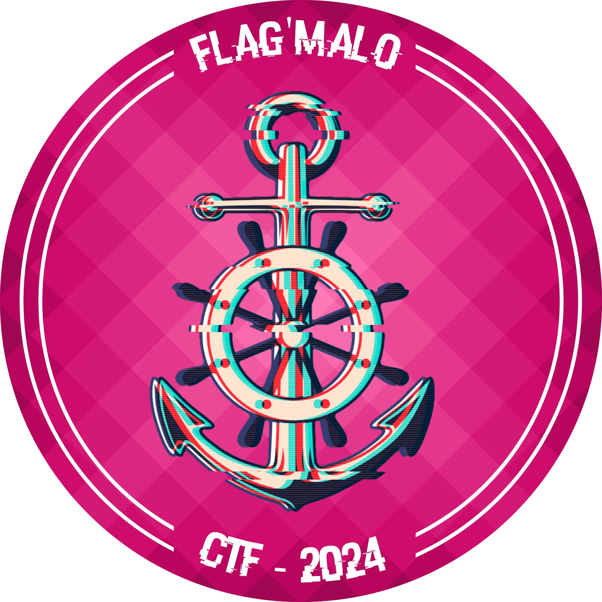
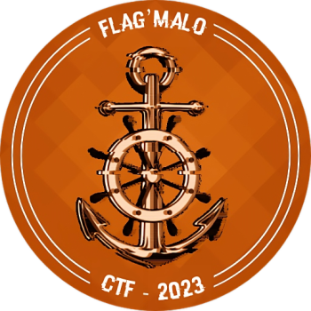
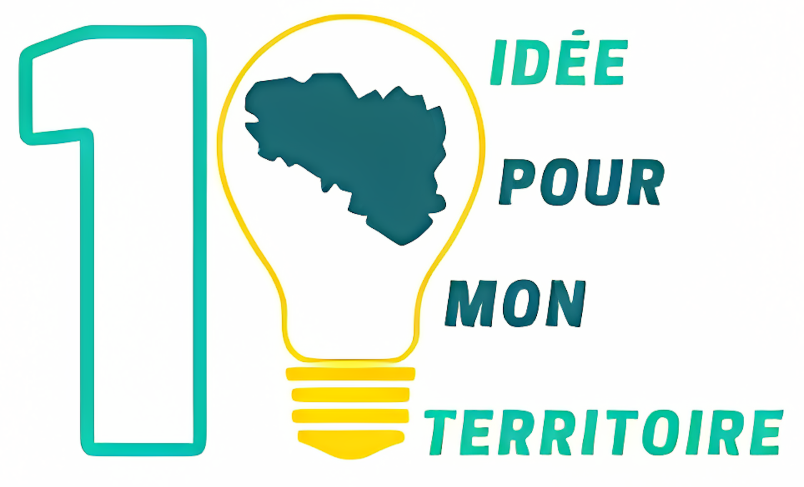
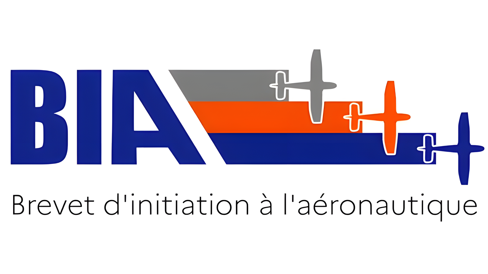

With my passion for airsoft, my team and I decided to create an association around airsoft. I was the founder and president of ESCOUADE ECHO. Creating an association taught me a lot, such as organizing events, managing accounts, and finding locations for our activities. This experience also helped me develop skills in project management, negotiation, and public relations.

CAN7 is a student association at ENSEEIHT, specializing in sound and lighting for events for over 20 years. It supports various events (galas, concerts, conferences, parties) with a wide range of professional equipment adapted to all needs. Committed to providing professional and friendly services, I am currently a member, participating in the technical management of events.

This was another participation in the event, where I took part again with my team, "Les Hackers à la retraire". It was an enriching and stimulating experience. Our team finished 2nd, and we particularly excelled in networks and OSINT.
I participated in the CTF at THCon 2025 with my team, With_Love_From_RU. The event took place at ENSEEIHT in Toulouse and brought together cybersecurity enthusiasts from around the world. It was a great opportunity to challenge my skills, collaborate with my teammates, and experience the vibrant atmosphere of one of the largest cybersecurity conferences in Occitania.


This time, instead of organizing the event, I participated with my team, « Les Hackers à la retraire ». We finished in 2nd place out of about fifteen teams, which was a very rewarding and stimulating experience.
In the past, I have also organized major events like the CTF FLAG'MALO 2023. My main task was to focus on the infrastructure to support the CTF. This role helped me develop skills in system management, security, and team coordination, while contributing to the success of the event.


I had the opportunity to participate in « Une idée pour mon territoire ». This event was about proposing a solution to a given theme. In my case, it was about sports in the Saint-Malo area. In groups of 5 students, we thought of a solution to better integrate Saint-Malo students into sports. With my team, we finished first in one of the event's categories.
I also have a small passion for aeronautics and space. I had the chance to pass the BIA, which gave me a basic understanding of aeronautics. This passion opened my eyes to the endless possibilities of space exploration and made me want to continue learning and improving in this field. I intend to get my ULM license to pilot small aircraft. Obtaining this license would allow me to fulfill a childhood dream.

My passions include digital technology, home automation, and 3D printing. I love exploring innovative tools and gadgets, experimenting with automation to improve everyday tasks, and designing 3D models that I can bring to life through printing. These activities not only stimulate my creativity but also help me acquire practical skills that will be valuable in my future career.